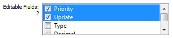

Mit dieser Funktion können die Parameter mehrerer Variablen gleichzeitig bearbeitet werden, auch wenn sie nicht zusammenhängend sind, z. B. die Priorität, das Protokoll oder die Anzahl der Dezimale.
Wenn Sie auf die Taste Multi Line Edit (Mehrzeilenbearbeitung) klicken und mehr als eine Variable in Crosstable auswählen, wird das Bearbeitungsfenster wie folgt angezeigt:
Durch erneutes Drücken der Taste Multi Line Edit kehren Sie in den Hauptmodus (Single Line Edit) zurück.
Sie können nur die Felder bearbeiten, die im Feld Bearbeitbare Felder (Editable Fields) ausgewählt sind:


 Bestätigen Sie die vorgenommenen Änderungen.
Bestätigen Sie die vorgenommenen Änderungen.
 Machen Sie die letzte Änderung rückgängig.
Machen Sie die letzte Änderung rückgängig.